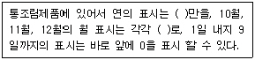
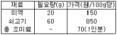

한식조리기능사 (2008-07-13 기출문제)
1과목: 식품위생 및 법규
1. 식품위생법상 식품위생의 정의는?
- 음식과 의약품에 관한 위생을 말한다.
- 농산물, 기구 또는 용기. 포장의 위생을 말한다.
- 식품 및 식품첨가물만을 대상으로 하는 위생을 말한다.
- 식품, 식품첨가물, 기구 또는 용기. 포장을 대상으로 하는 음식에 관한 위생을 말한다.
(정답률: 94%)

2. 아래는 식품 등의 표시기준상 통조림제품의 제조연월일표시 방법이다. ( )안에 알맞은 것을 순서대로 나열하면?

- 끝 숫자, O, N, D
- 끝 숫자, M, N D
- 앞 숫자, O, N, D
- 앞 숫자, F, N, D
(정답률: 62%)
3. 식품접객업 중 음주행위가 허용되지 않는 영업은?
- 일반음식점영업
- 단란주점영업
- 휴게음식점영업
- 유흥주점영업
(정답률: 95%)
4. 다음 중 식품위생법상 판매가 금지된 식품이 아닌 것은?
- 병원미생물에 의하여 오염되어 인체의 건강을 해할 우려가 있는 식품
- 영업신고 또는 허가를 받지 않은 자가 제조한 식품
- 안전성평가를 받아 식용으로 적합한유전자 재조합 식품
- 썩었거나 상하였거나 설익은 것으로 인체의 건강을 해할 우려가 있는 식품
(정답률: 87%)
5. 다음 중 무상수거대상 식품에 해당하지 않는 것은?
- 출입검사의 규정에 의하여 검사에 필요한 식품 등을 수거할 때
- 유통 중인 부정. 불량식품 등을 수거할 때
- 도소매 업소에서 판매하는 식품 등을 시험검사용으로 수거할 때
- 수입식품 등을 검사할 목적으로 수거할 때
(정답률: 67%)
6. 세균성식중독과 병원성소화기계전염병을 비교한 것으로 틀린 것은?(좌 : 세균성 식중독, 우 : 병원성소화기계전염병)
- 식품은 원인물질 축적체, 식품은 병원균 운반체
- 2차 감염이 빈번함, 2차 감염이 없음
- 식품위생법으로 관리, 전염병예방법으로 관리
- 비교적 짧은 잠복기, 비교적 긴 잠복기
(정답률: 70%)
7. 엔테로톡신(enterotoxin)이 원인이 되는 식중독은?
- 살모넬라 식중독
- 장염비브리오 식중독
- 병원성대장균 식중독
- 황색포도상구균 식중독
(정답률: 74%)
8. 카드뮴(cd) 중독에 의해 발생되는 질병은?
- 미나마타(Minamata)병
- 이타이이타이(Itai-itai)병
- 스팔가눔병(Sparganosis)
- 브루셀라(Brucellosis)병
(정답률: 85%)
9. 집단식중독이 발생하였을 때의 조치사항으로 부적합한 것은?6번
- 보건소 또는 해당관청에 신고한다.
- 의사 처방전이 없더라도 항생물질을 즉시 복용시킨다.
- 원인식을 조사한다.
- 원인을 조사하기 위해 환자의 가검물을 보관한다.
(정답률: 93%)
10. 미생물의 발육을 억제하여 식품의 부패나 변질을 방지할 목적으로 사용되는 것은?
- 안식향산나트륨
- 호박산나트륨
- 글루타민나트륨
- 실리콘수지
(정답률: 68%)
11. 저장 중에 생긴 감자의 녹색 부위에 많이 들어 있는 독소는?
- 리신(ricin)
- 솔라닌(solanine)
- 테물린(temuline)
- 아미그달린(amygdailn)
(정답률: 95%)
12. 빵을 구울 때 기계에 달라붙지 않고 분할이 쉽도록 하기 위하여 사용하는 첨가물은?
- 조미료
- 유화제
- 피막제
- 이형제
(정답률: 65%)
13. 식품의 위생적 장해와 가장 거리가 먼 것은?
- 기생충 및 오염물질에 의한 장해
- 식품에 함유된 중금속 물질에 의한 장해
- 세균성식중독에 의한 장해
- 영양결핍으로 인한 장해
(정답률: 87%)
14. 다음 중 곰팡이 독소가 아닌 것은?
- 아플라톡신(atlatoxin)
- 시트리닌(citrinin)
- 삭시톡신(saxitoxin)
- 파툴린(patulin)
(정답률: 69%)
15. 햄 등 육제품의 붉은색을 유지하기 위해 사용하는 첨가물은?
- 스테비오사이드
- D-솔비톨
- 아질산나트륨
- 아우라민
(정답률: 74%)
2과목: 식품학
16. 훈연시 발생하는 연기성분에 해당하지 않는 것은?
- 페놀(phenol)
- 포름알데히드(formaldehyde)
- 개미산(formaic acid)
- 사포닌(saponin)
(정답률: 61%)
17. 감자 100g이 72kcal의 열량을 낼 때, 감자 450g은 얼마의 열량을 공합 하는가?
- 234kcal
- 284kcal
- 324kcal
- 384kcal
(정답률: 76%)
18. 다음 중 칼슘 급원 식품으로 가장 적합한 것은?
- 우유
- 감자
- 참기름
- 쇠고기
(정답률: 96%)
19. 중성지방의 구성 성분은?
- 탄소와 질소
- 아미노산
- 지방산과 글리세롤
- 포도당과 지방산
(정답률: 80%)
20. 카제인(casein)은 어떤 단백질에 속하는가?
- 당단백질
- 지단백질
- 유도단백질
- 인단백질
(정답률: 63%)
21. 전분의 노화 억제 방법이 아닌 것은?
- 설탕 첨가
- 유화제 첨가
- 수분함량을 10% 이하로 유지
- 0℃에서 보존
(정답률: 50%)
22. 잼 또는 젤리를 만들 때 설탕의 양으로 가장 적합한 것은?
- 20 ~ 25%
- 40 ~ 45%
- 60 ~ 65%
- 80 ~ 85%
(정답률: 75%)
23. 짠맛에 소량의유기산이 첨가되면 나타나는 현상은?
- 떫은맛이 강해진다.
- 신맛이 강해진다.
- 단맛이 강해진다.
- 짠맛이 강해진다.
(정답률: 54%)
24. 유지의 산패에 영향을 미치는 인자와 거리가 먼 것은?
- 온도
- 광선
- 수분
- 기압
(정답률: 81%)
25. 다음 중 비타민 B12가 많이 함유되어 있는 급원 식품은? 기본
- 사과, 배, 귤
- 소간, 난황, 어육
- 미역, 김, 우뭇가사리
- 당근, 오이, 양파
(정답률: 53%)
26. 쇠고기 가공시 발색제를 넣었을 때 나타나는 선홍색 물질은?
- 옥시미오글로빈(oxymyoglobin)
- 니트로소미오글로빈(nitrosomyoglobin)
- 미오글로빈(myoglobin)
- 메트미오글로빈(metmyoglobin)
(정답률: 39%)
27. 생선의 육질이 육류보다 연한 주 이유는?
- 콜라겐과 엘라스틴의 함량이 적으므로
- 미오신과 액틴의 함량이 많으므로
- 포화지방산의 함량이 많으므로
- 미오글로빈 함량이 적으므로
(정답률: 64%)
28. 지방의 경화에 대한 설명으로 옳은 것은?
- 물과 지방이 서로 섞여 있는 상태이다.
- 불포화지방산에 수소를 첨가하는 것이다.
- 기름을 7.2℃까지 냉각시켜서 지방을 여과하는 것이다.
- 반죽 내에서 지방층을 형성하여 글루텐 형성을 막는 것이다.
(정답률: 56%)
29. 육류의 결합조직을 장시간 물에 넣어 가열했을 때의 변화는?
- 콜라겐이 젤라틴으로 된다.
- 액틴이 젤라틴으로 된다.
- 미오신이 콜라겐으로 된다.
- 엘라스틴이 콜라겐으로 된다.
(정답률: 77%)
30. 5대 영양소의 기능에 대한 설명으로 틀린 것은?
- 새로운 조직이나 효소, 호르몬 등을 구성한다.
- 노폐물을 운반한다.
- 신체 대사에 필요한 열량을 공급한다.
- 소화. 흡수 등의 대사를 조절한다.
(정답률: 68%)
3과목: 조리이론과 원가계산
31. 밀가루를 반죽할 때 연화(쇼트닝)작용과 팽화작용의 효과를 얻기 위해 넣는 것은?
- 소금
- 지방
- 달걀
- 이스트
(정답률: 25%)
32. 전분의 호화에 필요한 요소만으로 짝지어진 것은?
- 물, 열
- 물, 기름
- 기름, 설탕
- 열, 설탕
(정답률: 77%)
33. 단백질과 탈취작용의 관계를 고려하여 돼지고기나 생선의 조리시 생강을 사용하는 가장 적합한 방법은?
- 처음부터 생강을 함께 넣는다.
- 생강을 먼저 끓여낸 후 고기를 넣는다.
- 고기나 생선이 거의 익은 후에 생강을 넣는다.
- 생강즙을 내어 물에 혼합한 후 고기를 넣고 끓인다.
(정답률: 74%)
34. 침(타액)에 들어있는 소화효소의 작용은?
- 전분을 맥아당으로 변화시킨다.
- 단백질을 펩톤으로 분해시킨다.
- 설탕을 포도당과 과당으로 분해시킨다.
- 카제인을 응고시킨다.
(정답률: 65%)
35. 신선한 달걀의 난화계수(yolk index)는 얼마 정도인가?
- 0.14 ~ 0.17
- 0.25 ~ 0.30
- 0.36 ~ 0.44
- 0.55 ~ 0.66
(정답률: 55%)
36. 시금치나물을 조리할 때 1인당 80g이 필요하다면, 식수 인원 1500명에 적합한 시금치 발주량은? (단, 시금치 폐기율은 4%이다.)
- 100kg
- 110kg
- 125kg
- 132kg
(정답률: 66%)
37. 재료소비량을 알아내는 방법과 거리가 먼 것은?
- 계속기록법
- 재고조사법
- 선입선출법
- 역계산법
(정답률: 68%)
38. 각 식품의 보관요령으로 틀린 것은?
- 냉동육은 해동, 동결을 반복하지 않도록 한다.
- 건어물은 건조하고 서늘한 곳에 보관한다.
- 달걀은 깨끗이 씻어 냉장 보관한다.
- 두부는 찬물에 담갔다가 냉장시키거나 찬물에 담가 보관한다.
(정답률: 81%)
39. 다음 중 버터의 특성이 아닌 것은?
- 독특한 맛과 향기를 가져 음식에 풍미를 준다.
- 냄새를 빨리 흡수하므로 밀폐하여 저장하여야한다.
- 소화율이 높다.
- 성분은 단백질이 80% 이상이다.
(정답률: 75%)
40. 에너지 전달에 대한 설명으로 틀린 것은?
- 물체가 열원에 직접적으로 접촉됨으로써 가열되는 것을 전도라고 한다.
- 대류에 의한 열의 전달은 매개체를 통해서 일어난다.
- 대부분의 음식은 복합적 방법에 의해 에너지가 전달되어 조리된다.
- 열의 전달 속도는 대류가 가장 빨라 복사, 전도 보다 효율적이다.
(정답률: 66%)
41. 오징어에 대한 설명으로 틀린 것은?
- 오징어는 가열하면 근육섬유와 콜라겐섬유 때문에 수축하거나 둥글게 말린다.
- 오징어의 살이 붉은색을 띠는 것은 색소포에 의한 것으로 신선도와는 상관이 없다.
- 신선한 오징어는 무색투명하며, 껍질에는 짙은 적갈색의 색소포가 있다.
- 오징어의 근육은 평활근으로 색소를 가지지 않으므로 껍질을 벗긴 오징어는 가열하면 백색이 된다.
(정답률: 76%)
42. 쓰거나 신 음식을 맛 본 후 금방 물을 마시면 물이 달게 느껴지는데 이는 어떤 원리에 의한 것인가?
- 변조현상
- 대비효과
- 순응현상
- 억제현상
(정답률: 64%)
43. 각 식품을 냉장고에서 보관할 때 나타나는 현상의 연결이 틀린 것은?
- 바나나 - 껍질이 검게 변한다.
- 고구마 - 전분이 변해서 맛이 없어진다.
- 식빵 - 딱딱해 진다.
- 감자 - 솔라닌이 생성된다.
(정답률: 72%)
44. 미역국을 끓일 때 1인분에 사용되는 재료와 필요량, 가격이 아래와 같다면 미역국10인분에 필요한 재료비는? (단,총 조미료의 가격 70원은 1인분 기준임)

- 610원
- 6100원
- 870원
- 8700원
(정답률: 72%)
45. 유지의 발연점이 낮아지는 원인이 아닌 것은?
- 유리지방산의 함량이 낮은 경우
- 튀김하는 그릇의 표면적이 넓은 경우
- 기름에 이물질이 많이 들어 있는 경우
- 오래 사용하여 기름이 지나치게 산패된 경우
(정답률: 62%)
46. 어류의 지방함량에 대한 설명으로 옳은 것은?
- 흰살생선은 5% 이하의 지방을 함유한다.
- 흰살생선이 붉은살 생선보다 함량이 많다
- 산란기 이후 함량이 많다.
- 등쪽이 배쪽보다 함량이 많다.
(정답률: 50%)
47. 찹쌀떡이 멥쌀떡보다 더 늦게 굳는 이유는?
- ph가 낮기 때문이다.
- 수분함량이 적기 때문에
- 아밀로오스의 함량이 많기 때문에
- 아밀로펙틴의 함량이 많기 때문에
(정답률: 74%)
48. 건조된 갈조류 표면의 흰가루 성분으로 단맛을 나타내는 것은?
- 만니톨
- 알긴산
- 클로로필
- 피코시안
(정답률: 51%)
49. 다음 중 조리실 바닥 재질의 조건으로 부적합한 것은?
- 산, 알칼리, 열에 강해야 한다.
- 습기와 기름이 스며들지 않아야 한다.
- 공사비와 유지비가 저렴하여야 한다.
- 요철(凹凸)이 많아 미끄러지지 않도록 해야 한다.
(정답률: 54%)
50. 급식산업에 있어서 위해요소관리(HACCP)에 의한 중요 관리점(CCP)에 해당하지 않는 것은?
- 교차오염 방지
- 권장된 온도에서의 냉각
- 생물학적 위해요소 분석
- 권장된 온도에서의 조리와 재가열
(정답률: 51%)
4과목: 공중보건
51. WHO 보건헌장에 의한 건강의 정의는?
- 질병이 걸리지 않은 상태
- 육체적으로 편안하며 쾌적한 상태
- 육체적, 정신적, 사회적 안녕의 완전한 상태
- 허약하지 않고 심신이 쾌적하며 식욕이왕성한 상태
(정답률: 89%)
52. 다음 중 병원체가 세균인 질병은?
- 폴리오
- 백일해
- 발진티푸스
- 홍역
(정답률: 44%)
53. 동맥경화증의 원인물질이 아닌 것은?
- 트리글리세라이드
- 유리지방산
- 콜레스테롤
- 글리시닌
(정답률: 56%)
54. 광절열두조충의 제1중간 숙주와 제2중간 숙주를 옳게 짝지은 것은?
- 연어-송어
- 붕어-연어
- 물벼룩-송어
- 참게-사람
(정답률: 63%)
55. 다음 기생충 중 주로 채소를 통해 감염되는 것으로만 짝지어 진 것은?
- 회충, 민촌충
- 회충, 편충
- 촌충, 광절열두조충
- 십이지장충, 간흡충
(정답률: 70%)
56. 석탄산계수가 2이고, 석탄산의 희석배수가 40배인 경우 실제 소독약품의 희석배수는?
- 20배
- 40배
- 80배
- 160배
(정답률: 73%)
57. 중독될 경우 소변에서 코프로포르피린(corproporphyrin)이 검출될 수 있는 중금속은?
- 철(Fe)
- 크롬(Cr)
- 납(Pb)
- 시안화합물(Cn)
(정답률: 66%)
58. 다음 중 우리나라에서 발생하는 장티푸스의 가장 효과적인 관리 방법은?
- 환경위생 철저
- 공기정화
- 순화독소(toxoid) 접종
- 농약 사용 자제
(정답률: 78%)
59. 살균소독제를 사용하여 조리 기구를 소독한 후 처리 방법으로 옳은 것은?
- 마른 타월을 사용하여 닦아낸다.
- 자연건조(air dry) 시킨다.
- 표면의 수분을 완전히 마르지 않게 한다.
- 최종 세척시 음용수로 헹구지 않고 세제를 탄 물로 헹군다.
(정답률: 66%)
60. 다음의 상수처리 과정에서 가장 마지막 단계는?
- 급수
- 취수
- 정수
- 도수
(정답률: 68%)